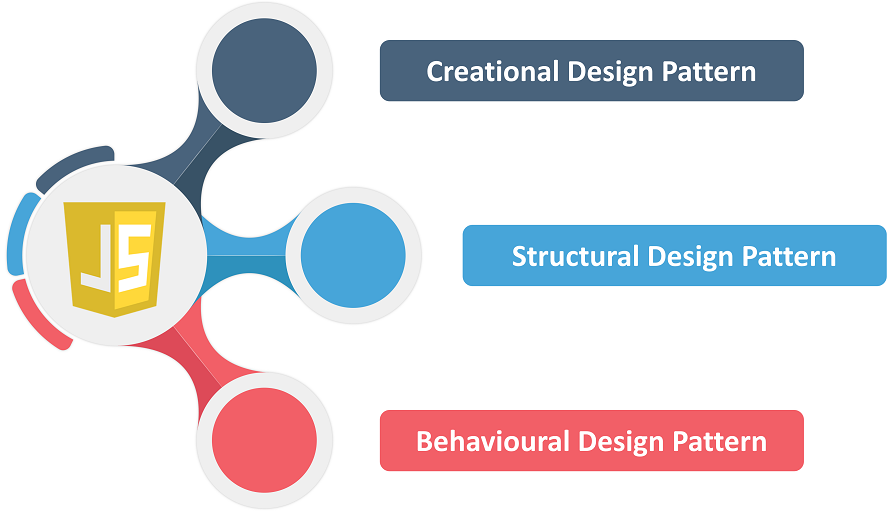
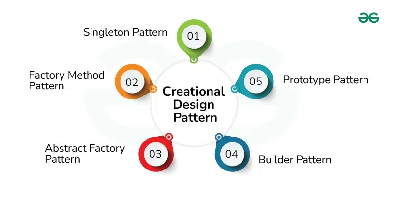
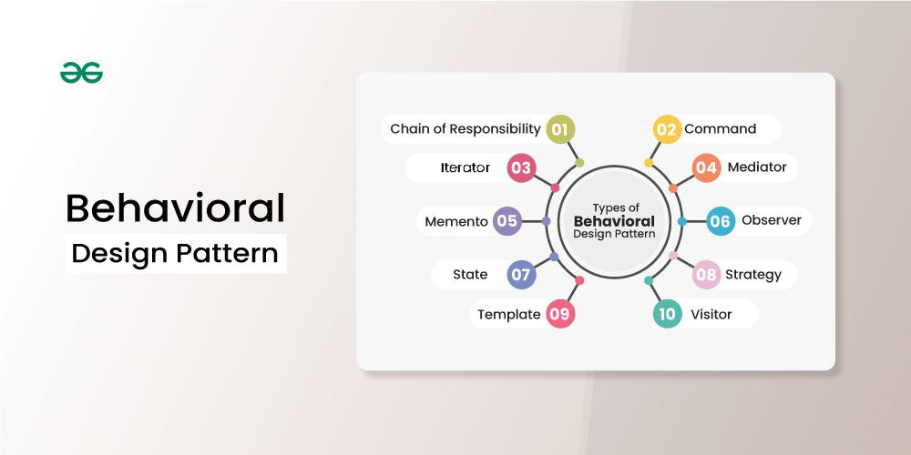

Design Patterns in JavaScript
Created by adAstra97
What's a design pattern?
Design patterns are typical solutions to commonly occurring problems in software design. They are like pre-made blueprints that you can customize to solve a recurring design problem in your code.
Why should I learn patterns?
- Tested solutions
- Code standardization
- Common programming vocabulary
Main groups of patterns
Creational patterns
Singleton Pattern
Singleton is a design pattern that ensures that a class has only one immutable instance.
Singleton code example
Factory Method Pattern
The Factory method pattern provides an interface for creating objects that can be modified after creation.
Factory Method Pattern code example
Abstract Factory Pattern
The Abstract Factory pattern lets us create groups of related objects without needing to specify exact classes.
Here’s how it works: we have an abstract factory that the client interacts with. This abstract factory then calls the specific concrete factory based on the logic, and that concrete factory produces the final object.
Abstract Factory Pattern code example
Builder Pattern
The Builder pattern is used to create objects in "steps". Normally we will have functions or methods that add certain properties or methods to our object.
Builder Pattern code example
Prototype Pattern
The Prototype pattern allows you to create an object using another object as a blueprint, inheriting its properties and methods.
Prototype Pattern code example
Structural Design Patterns

Adapter Pattern
The Adapter allows two objects with incompatible interfaces to interact with each other.
Adapter Pattern code example
Bridge Design Pattern
Bridge is a structural design pattern that lets you split a large class or a set of closely related classes into two separate hierarchies—abstraction and implementation—which can be developed independently of each other.
Bridge Design Pattern code example
Composite Pattern
Composite is a structural design pattern that lets you compose objects into tree structures and then work with these structures as if they were individual objects.
Composite Pattern code example
Decorator Pattern
Decorator is a structural pattern that allows adding new behaviors to objects dynamically by placing them inside special wrapper objects, called decorators.
Decorator Pattern code example
Facade Pattern
The Facade pattern provides a simplified interface to a library, a framework, or any other complex set of classes.
Facade Pattern code example
Proxy Pattern
Proxy is a structural design pattern that provides an object that acts as a substitute for a real service object used by a client. A proxy receives client requests, does some work (access control, caching, etc.) and then passes the request to a service object.
Proxy Pattern code example
Flyweight Pattern
Flyweight is a structural design pattern that allows programs to support vast quantities of objects by keeping their memory consumption low.
Flyweight Pattern code example
Behavioral Patterns
Chain of Responsibility Pattern
The Chain of Responsibility passes requests along a chain of handlers. Each handler decides either to process the request or to pass it to the next handler in the chain.
Chain of Responsibility Pattern code example
Command pattern
Command is behavioral design pattern that converts requests or simple operations into objects. The Command pattern is pretty common in TypeScript code. Most often it’s used as an alternative for callbacks to parameterizing UI elements with actions. It’s also used for queueing tasks, tracking operations history, etc.
Command pattern code example
Iterator pattern
The iterator is used to traverse elements of a collection. Any of the JavaScript built in functions we have at our disposal to iterate over data structures (for, forEach, for...of, for...in, map, reduce, filter, and so on) are examples of the iterator pattern. Same as any traversing algorithm we code to iterate through more complex data structures like trees or graphs.
Mediator pattern
The Mediator pattern helps components in a program communicate indirectly through a special mediator object. By doing so, it reduces the tight coupling between these components.
Mediator pattern code example
Memento pattern
The Memento design pattern is a behavioral pattern that is used to capture and restore an object’s internal state without violating encapsulation.
Memento pattern code example
Observer pattern
Observer is a behavioral design pattern that allows some objects to notify other objects about changes in their state.
Observer pattern code example
State pattern
State is a behavioral design pattern that allows an object to change the behavior when its internal state changes.
State pattern code example
Strategy pattern
Strategy is a behavioral design pattern that turns a set of behaviors into objects and makes them interchangeable inside original context object.
Strategy pattern code example
Template Method pattern
Template Method is a behavioral design pattern that allows you to define a skeleton of an algorithm in a base class and let subclasses override the steps without changing the overall algorithm’s structure.
Template Method pattern code example
Visitor pattern
Visitor is a behavioral design pattern that allows adding new behaviors to existing class hierarchy without altering any existing code.
Visitor pattern code example